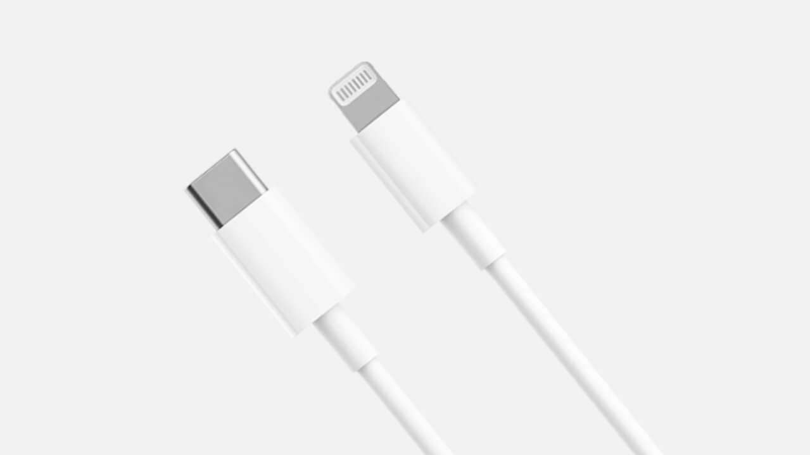

Cabo USB Tipo C para
Lightning Xiaomi 1m
Certificação Apple | Suporte para carregamento rápido | Robusto e Resistente |Lightning Xiaomi 1m
Durabilidade contínua para uso prolongado | Funciona com o carregador rápido Mi 18W Tipo-C
Carregamento eficiente de até 50%
mais potência para iPhone
Quando usado com o carregador rápido Mi de 18W Tipo-C1, o cabo pode fornecer até 18 W de carregamento rápido para dispositivos como o iPhone 11, o que é 50% maior do que a potência máxima de carregamento de cabos USB-A padrão.
15 min
 20%
USB-A comparado a um Lightning Xiaomi
1a compatibilidade e lista de dos dispositivos Apple testados.
20%
USB-A comparado a um Lightning Xiaomi
1a compatibilidade e lista de dos dispositivos Apple testados.
Carregando um iPhone 11
28%
Cabo USB Tipo C para Lightning Xiaomi
 20%
20%
Tempo de carregamento reduzido a 53%
Quando usado com o carregador rápido Mi de 18W2, o cabo oferece 53% a mais de rapidez que o carregador e cabo padrão para o Iphone 11.
Carregamento total de um iPhone 11
1h 47min
Com o Cabo USB Tipo C para Linghtning Xiaomi (1m)
3h 52min
Com cabo e carregador padrão de iPhone 11
Certificação Apple MFi | Livre de exibição de janela pop up para carregamento
O conector original Apple C94 funciona com todos os dispositivos iPhone compatíveis.
Certificação MFi segura e confiável.
Lista de Testes de Compatibilidade de Dispositivos Apple
- Tipo de Carregamento
- Smartphone
- iPad
- Carregamento PD (Power Delivery)
-
iPhone 11 Pro Max
iPhone 11 Pro
iPhone 11
iPhone XS Max
iPhone XS
iPhone XR
iPhone X
iPhone 8 Plus
iPhone 8 -
iPad Pro 12.9-inch (2nd generation)
iPad Pro 10.5-inch
iPad Air310.5-inch
iPad mini5 7.9-inch - Carregamento Normal
-
iPhone 7
iPhone 7 Plus
iPhone 6
iPhone 6 Plus
iPhone 6
iPhone 6s
iPhone 6s Plus -
iPad Pro 12.9-inch (1st generation)
iPad Pro 9.7-inch
iPad 9.7-inch
iPad Air 9.7-inch
iPad mini 7.9-inch
Transferência rápida de arquivos grandes
Um único cabo para transferências de arquivos e sua solução para transmissão de dados.
Use o cabo para conectar dispositivos Apple com entradas Lightning diretamente
a notebooks com entradas USB-C para transferências mais rápidas e eficientes.
Use o cabo para conectar dispositivos Apple com entradas Lightning diretamente
a notebooks com entradas USB-C para transferências mais rápidas e eficientes.
Durabilidade constante para uso prolongado
A proteção de três camadas evita que o cabo seja danificado. Com mais de 10.000 ciclos de testes de flexibilidade realizados3, o cabo suporta um certo nível de dobras e outros movimentos que acontecem diariamente, tornando-o muito mais durável.
Teste de flexibilidade testado
10.000
vezes
Hardware protegido
O núcleo interno de alta qualidade garante a segurança do cabo durante o uso, reduzindo efetivamente a resistência e eficiência do carregamento.
Design cuidadoso, cheio de detalhes práticos

Conectores reversíveis
Os conectores Lightning Tipo C são reversíveis e podem ser conectados
de qualquer um dos lados voltados para cima.
de qualquer um dos lados voltados para cima.
Fino e leve
Os materiais externos do cabo são de PC + PET.
Ambos passaram no teste de classificação que
retarda chamas VW-14

Ambos passaram no teste de classificação que
retarda chamas VW-14
1 Carregador rápido Mi de 18 W Tipo C: todos os dispositivos iPhone 11 usados para o teste de carregamento tinham um nível inicial de bateria referente a 1%. O carregador rápido Mi de 18 W Tipo C não está incluso e pode ser adquirido separadamente.
2 Lista de testes de compatibilidade de dispositivos Apple: os dispositivos da lista de testes referem-se a modelos de dispositivos e versões de software. As atualizações de software podem afetar os resultados de compatibilidade. Os dispositivos Apple incluem, mas não se limitam aos modelos citados acima.
3 10.000 Ciclos de teste de flexibilidade: dados obtidos sob as seguintes condições de teste: peso de carga de 250 g, ±90°, 25 ciclos por minuto.
4 Passou no tese de classificação de retardo de chama: o carregador rápido Mi 18 W Tipo C | Lightning passou no teste cujo relatório foi emitido pela SGS CSTC Starndards Technical Services Co.,Ltd (filial de Guangzhou). Relatório n° GZIN2003006134MR_CN
Todos os dados acima são valores medidos nos Laboratórios Zimi. No entanto, os dados podem variar de acordo com as mudanças ambientais objetivas.